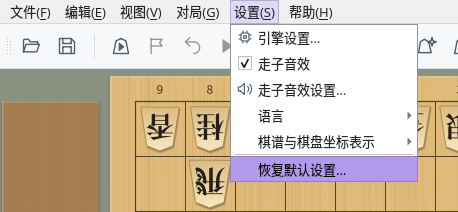
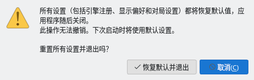

恢复默认设置与设置文件
介绍将所有设置恢复为默认值的方法，以及设置的保存位置
截图在 Linux 上以简体中文界面拍摄。
恢复默认设置
从“设置”菜单可一次性将包括引擎注册在内的所有设置恢复为默认值
打开菜单栏的“设置”，选择最下方的“恢复默认设置…”。菜单面板的“设置”标签页中也有相同的按钮。
只有在没有进行对局（包括网络对局）、棋谱分析、研究、诘棋搜索或局面编辑时才能选择此项目。进行这些操作时，此项目显示为灰色，无法选择。


“设置”菜单：“恢复默认设置…”位于最下方
会打开“重置设置”确认对话框。点击“恢复默认并退出”，即可将设置恢复为默认值并退出 ShogiBoardQ。此操作无法撤销。
点击“取消”或按 Esc 键，将不做任何更改并关闭确认对话框。为防止误操作，打开确认对话框时默认选中的是“取消”。


“重置设置”确认对话框
与正常退出相同，如果有未保存的棋谱或定跡，会询问是否保存。如果在此取消退出，设置不会被重置。
设置文件的内容会在所有窗口关闭后清除，因此退出时保存的窗口大小和位置也不会保留。ShogiBoardQ 不会自动重新启动，请再次启动。启动后将使用与首次启动时相同的默认设置。
如果无法写入设置文件，会显示“重置设置失败”并给出设置文件的位置。请检查保存位置的写入权限和可用磁盘空间。
会恢复默认的设置与保留的数据
只清除设置文件的内容。棋谱等文件和诘棋练习的尝试历史会保留
| 项目 | 重置后 | 说明 |
|---|---|---|
| 引擎注册与选项 | 恢复默认 | 已注册的引擎列表和各引擎的选项会被清除。引擎本身的文件不会被删除，重新注册引擎即可使用。 |
| 对局、分析等对话框的设置 | 恢复默认 | 用时规则、对局者名称、棋谱自动保存位置、上次选择的引擎等 |
| 外观、字体与走子音效 | 恢复默认 | 棋子、棋盘、背景，应用程序字体、文字大小，走子音效的开关和音量等 |
| 界面语言与棋谱表示 | 恢复默认 | 界面语言恢复为“跟随系统设置”，“棋谱与棋盘坐标表示”恢复为“跟随界面语言” |
| 窗口与停靠面板 | 恢复默认 | 窗口和对话框的大小与位置、停靠面板的布局、保存的停靠布局，以及菜单的收藏 |
| 最近使用的文件 | 恢复默认 | 定跡文件和局面集的历史记录、上次打开的文件夹、所选的诘棋题集等 |
| 保存的棋谱、定跡、局面集等文件 | 保留 | 自己保存的文件不会被删除 |
| 诘棋练习的尝试历史 | 保留 | 保存在与设置文件分开的数据库中（参见保存位置） |
| 缓存 | 保留 | 临时保存的走子音效音频和诘棋判定结果，需要时会重新生成 |
如果只想恢复部分设置，请在相应的画面中更改。例如，“走子音效设置…”和对局对话框中都有“恢复默认值”按钮。
设置文件的保存位置
设置保存在各操作系统固定文件夹中的 ShogiBoardQ.ini 里
| 操作系统 | 设置文件 |
|---|---|
| Windows | C:\Users\<用户名>\AppData\Local\ShogiBoardQ\ShogiBoardQ.ini |
| macOS | ~/Library/Preferences/ShogiBoardQ/ShogiBoardQ.ini |
| Linux | ~/.config/ShogiBoardQ/ShogiBoardQ.ini（设置了环境变量 XDG_CONFIG_HOME 时为 $XDG_CONFIG_HOME/ShogiBoardQ/ShogiBoardQ.ini） |
~ 表示主文件夹（macOS 为 /Users/<用户名>，Linux 为 /home/<用户名>）。设置按用户保存在此位置，而不是保存在解压发布包（ZIP）的文件夹或 AppImage 内部，因此替换为新版本或移动应用程序文件夹后，设置仍会保留。
- Windows：在文件资源管理器的地址栏中输入
%LOCALAPPDATA%\ShogiBoardQ并按 Enter 键。 - macOS：在访达中选择“前往”→“前往文件夹…”，输入
~/Library/Preferences/ShogiBoardQ。“资源库”文件夹通常是隐藏的。 - Linux：在文件管理器的地址栏中输入
~/.config/ShogiBoardQ。.config是隐藏文件夹。
备份设置时，请先退出 ShogiBoardQ，再复制 ShogiBoardQ.ini。恢复时，也请在 ShogiBoardQ 未运行时将文件放回原位置。在 ShogiBoardQ 运行期间对文件所做的更改，可能会被退出时保存的设置覆盖。
如果因 ShogiBoardQ 无法启动等原因不能从菜单重置，请在 ShogiBoardQ 未运行时删除或重命名 ShogiBoardQ.ini。下次启动时将使用默认设置。
| 操作系统 | 诘棋练习的尝试历史 | 缓存 |
|---|---|---|
| Windows | %APPDATA%\ShogiBoardQ | %LOCALAPPDATA%\ShogiBoardQ\cache |
| macOS | ~/Library/Application Support/ShogiBoardQ | ~/Library/Caches/ShogiBoardQ |
| Linux | ~/.local/share/ShogiBoardQ | ~/.cache/ShogiBoardQ |
尝试历史保存在 tsume_progress.sqlite 中。“恢复默认设置…”不会删除它，如果也想清除历史，请退出 ShogiBoardQ 后删除此文件。缓存文件夹也可以删除，需要时会重新生成。
Windows 的 %APPDATA% 为 C:\Users\<用户名>\AppData\Roaming，%LOCALAPPDATA% 为 C:\Users\<用户名>\AppData\Local。在 Linux 上，如果设置了环境变量 XDG_DATA_HOME 或 XDG_CACHE_HOME，则使用其下的 ShogiBoardQ 文件夹。